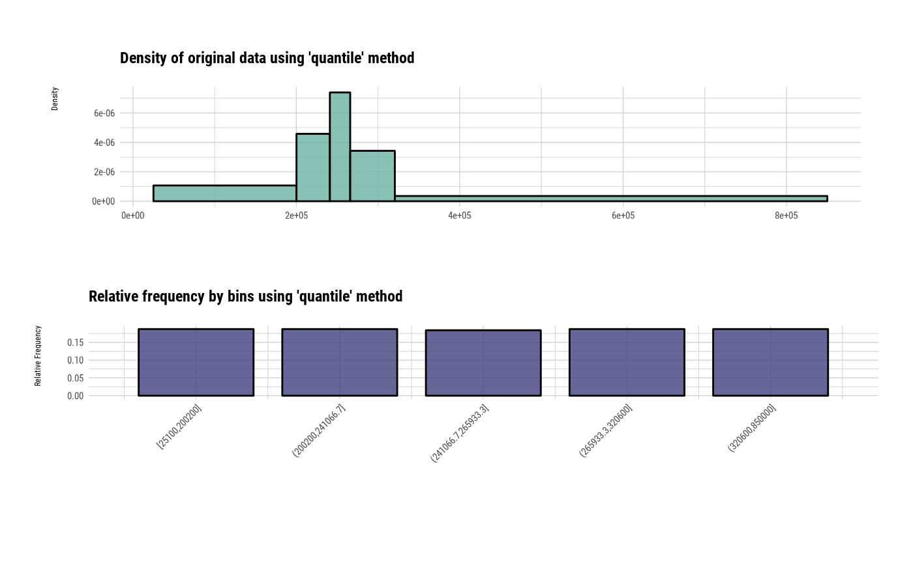
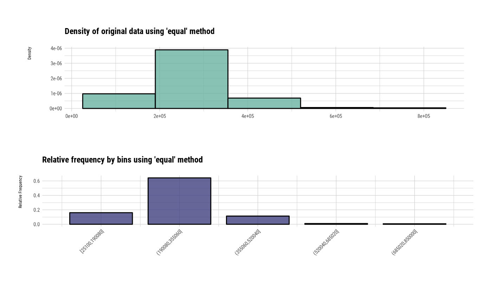
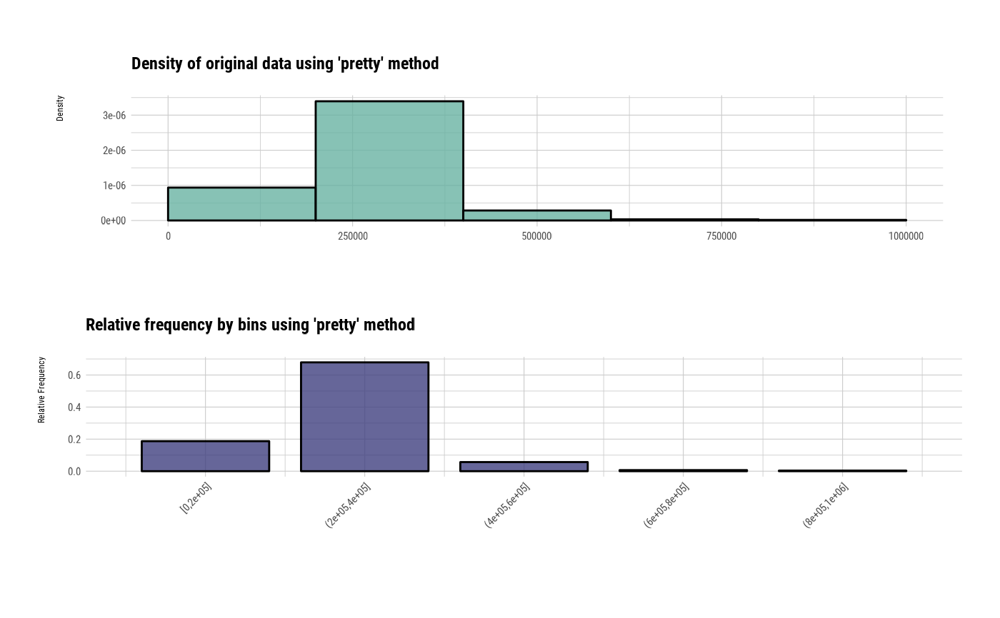
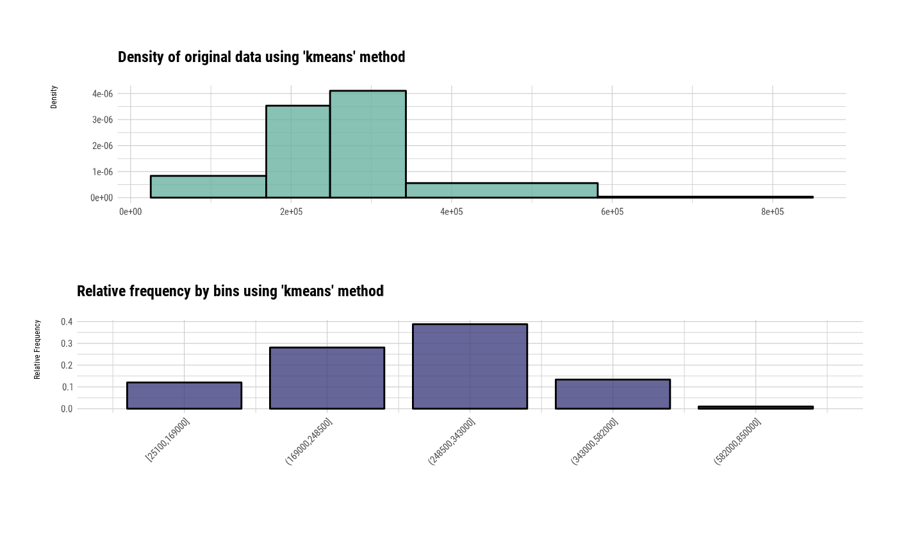
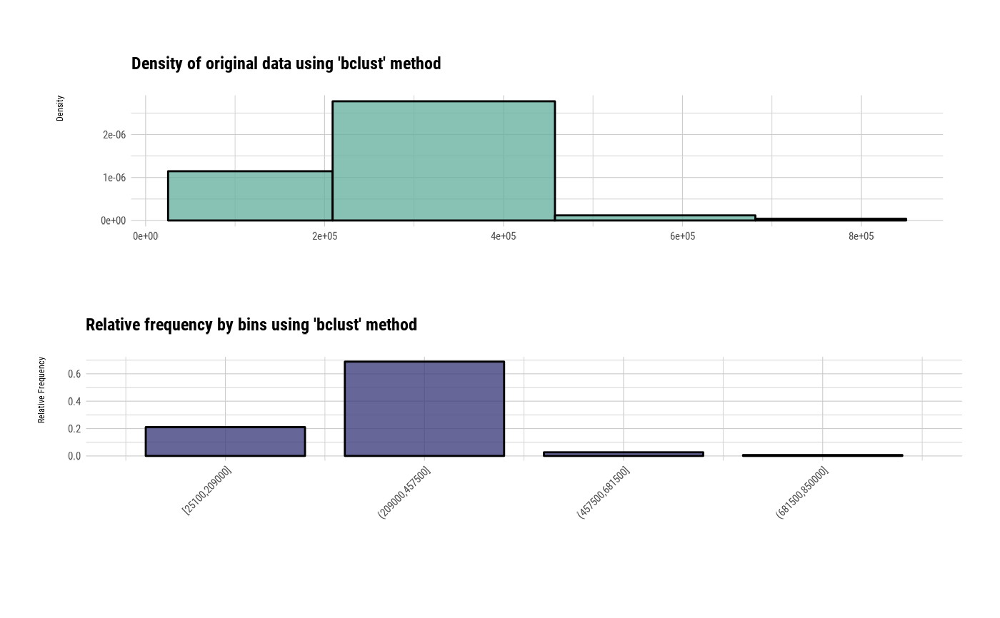

Visualize two plots on a single screen. The plot at the top is a histogram representing the frequency of the level. The plot at the bottom is a bar chart representing the frequency of the level.
# S3 method for bins plot(x, typographic = TRUE, base_family = NULL, ...)
| x | an object of class "bins", usually, a result of a call to binning(). |
|---|---|
| typographic | logical. Whether to apply focuses on typographic elements to ggplot2 visualization. The default is TRUE. if TRUE provides a base theme that focuses on typographic elements using hrbrthemes package. |
| base_family | character. The name of the base font family to use for the visualization. If not specified, the font defined in dlookr is applied. (See details) |
| ... | arguments to be passed to methods, such as graphical parameters (see par). |
The base_family is selected from "Roboto Condensed", "Liberation Sans Narrow", "NanumSquare", "Noto Sans Korean". If you want to use a different font, use it after loading the Google font with import_google_font().
# Generate data for the example # \donttest{ heartfailure2 <- heartfailure heartfailure2[sample(seq(NROW(heartfailure2)), 20), "platelets"] <- NA # Binning the platelets variable. default type argument is "quantile" bin <- binning(heartfailure2$platelets, nbins = 5) plot(bin)# Using another type arguments bin <- binning(heartfailure2$platelets, nbins = 5, type = "equal") plot(bin)# }